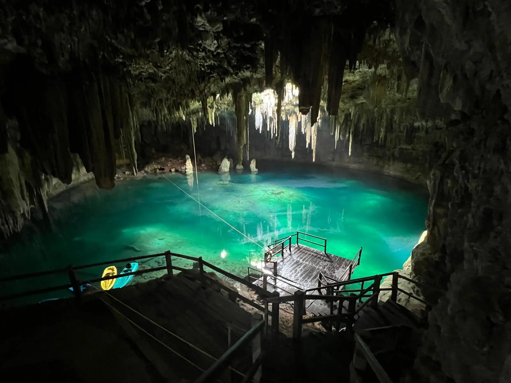
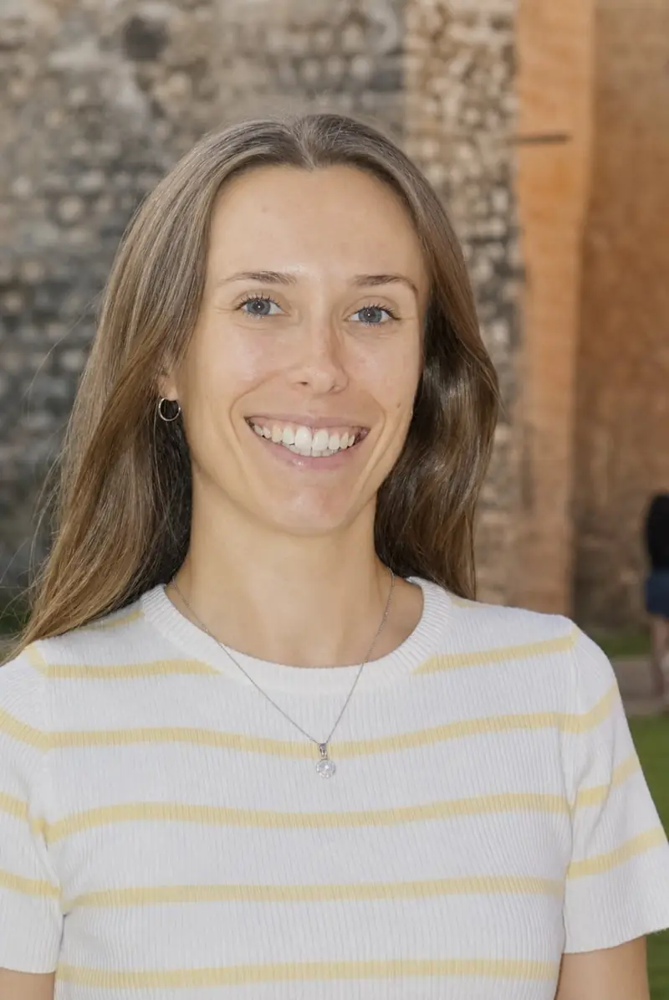

Le Yucatán maya, vécu de l'intérieur.
Excursions, voyages sur mesure, réceptif. Une agence locale et francophone.



Notre histoire
Je suis Coline, française et fondatrice de Toh Tours Yucatán. Installée au Yucatán depuis 2022, j'ai travaillé aux côtés d'une ONG auprès des familles de Yalcobá, sur des projets d'agroforesterie, de méliponiculture et de tourisme rural. Cette collaboration dans la durée a créé des liens de confiance avec la communauté.
Aujourd'hui, Toh Tours Yucatán conçoit et accompagne des expériences de tourisme communautaire, des voyages sur mesure dans la péninsule et des services pour les professionnels du voyage. Toutes reposent sur une même conviction : un tourisme plus humain et plus responsable, qui valorise les traditions, les savoir-faire et les opportunités locales.
Coline
Avis de voyageurs
Coline est une guide formidable, passionnée et adorable. Nous avons passé une excellente journée à ses côtés, riche en découvertes, bons plans et en bons moments. Une expérience que nous recommandons vivement ! Merci Coline !
Une superbe journée passée en compagnie de Coline. C’est beau de découvrir un pays à travers les yeux de quelqu’un qui l’aime autant. Des endroits confidentiels, loin de la foule, et des explications qui nous ont permis de mieux nous immerger dans la culture mexicaine et d’apprécier encore plus ses richesses. Merci !
Expérience incroyable et authentique, découverte des abeilles maya passionnantes, fabrication de savon, repas délicieux cuisiné par une famille adorable, allez y les yeux fermés !